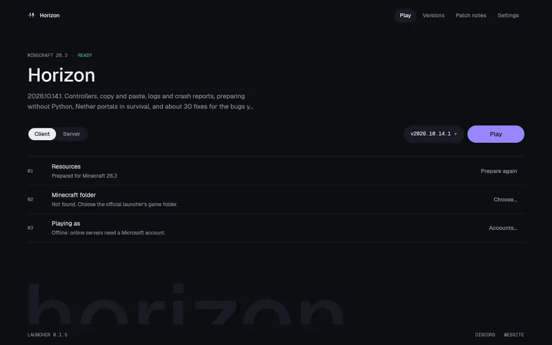
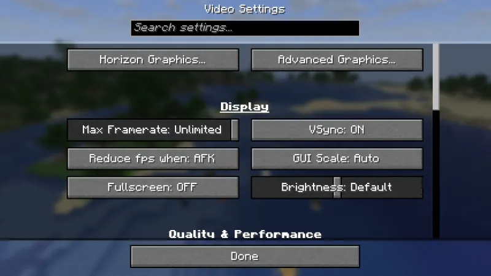

Minecraft: Java Edition 26.3Rust
Borizon, Horizon but born with offline support.
A fork of Horizon with the Microsoft account stack removed and Mojang-direct file fetching added. More optimized dependencies. Full offline support after setup.
Unofficial. Not an official Minecraft product. Not approved by or associated with Mojang or Microsoft.
01What it is
Borizon rebuilds Minecraft: Java Edition 26.3 in Rust, one subsystem at a time, and holds every piece to the same inputs as the vanilla game until the outputs are identical.
Your own copy, no account needed
The launcher fetches the required Minecraft files directly from Mojang's public endpoints. No Microsoft account. No keyring. No tokens. After setup, launch entirely offline.
Native on three platforms
Linux, macOS on Apple Silicon and Windows. Worlds come from a Rust port of the vanilla generators, drawn with vanilla's block models, lighting, sky and fog.
Open source
Borizon's code is MIT. It contains no Minecraft code, assets or data; those belong to Mojang and Microsoft under the Minecraft EULA.
02In game
Drawn by Borizon
Captured in the Rust client itself, with vanilla assets from the player's own copy and no mods or shaders.
03Parity
281 differential harnesses drive the same inputs through Borizon and through the vanilla client and server, and compare what comes out.
Every subsystem passes the harnesses that compare it.
Below is the project's own audit of each subsystem. Every subsystem now matches vanilla in every harness that compares it. 100% means 100% of what the harnesses compare, not proof that nothing else differs. The remaining known differences are listed below.
-
01Passes its harnesses
Window, input and game loop
The game loop, options, camera, auto-jump, toggle sprint/sneak, local input and the frame limiter match vanilla
-
02Passes its harnesses
Assets and resources
Item models match vanilla over 196,290 stacks and the client draws every item through them; the resource pack screen matches vanilla's drawing over 3,000 sessions of clicks, scrolling and searching, its incompatibility confirmation included
-
03Passes its harnesses
Network protocol and multiplayer
Joins vanilla servers; the dedicated server (
--dedicated) matches vanilla's files, status ping, login, configuration, play, chunks, chat, recipes, advancements and command tree, a client built from vanilla's packet code joins it, Borizon joins a vanilla server, and LAN discovery matches over 462 cases (offline mode only) -
04Passes its harnesses
Chunk storage and palettes
Client and saves share paletted containers, identical to vanilla over 266 scenarios
-
05Passes its harnesses
Section meshing
112 scenes and over a million quads identical to vanilla
-
06Passes its harnesses
Rendering
Entity models, block entity renderers (407 cases, End portals, gateways and the loom's banner preview included) and their animations (296 cases, End gateway beams included), the HUD overlays (2,200 states), the recipe book (600 states), the player list, subtitles and the world border match vanilla
-
07Passes its harnesses
Lighting
Saved and relit light matches vanilla, slabs and stairs included
-
08Passes its harnesses
World generation
2,352 whole chunks over 225 structure sites, in all three dimensions, identical to vanilla
-
09Passes its harnesses
Region files and saves
Saves round-trip with vanilla, and worlds from 1.8 to 26.2 upgrade as vanilla's DataFixers do, superflat worlds included; old options.txt and hotbar.nbt files are upgraded too
-
10Passes its harnesses
Entities and physics
Attributes, dimensions, death loot, spawn rules, natural spawning (15,500 cases), raids and patrols (1,900 cases), spawned mobs' gear, enchantments and state (
finalizeSpawn, 24,000 cases) and mob AI (92 scenarios: villager breeding and gossip, the warden, ghastlings and copper golems included) match vanilla -
11Passes its harnesses
Interaction and inventory
Menu clicks match over 8,000 click sequences, the loom and the crafter included; recipe book placement (6,000 cases), its buttons (1,200), the saved book (1,500) and the loom and crafter screens (1,600) match vanilla
-
12Passes its harnesses
Menus, HUD and chat
Every command runs as vanilla (758 commands over 39,685 parsed inputs), scoreboards and teams match (81,000 operations), the player list matches over 872,000 draw calls with heads drawn from players' skins (authlib's textures, SkinManager's lookup, legacy skin conversion), and the chat matches focused and scrolled; the resource pack screen (selection over 4,000 cases, drawing and its incompatibility confirmation over 3,000 sessions) and the chat input with its command suggestions, usage lines, Tab completion and history (3,000 sessions on vanilla's client command tree) match vanilla
-
13Passes its harnesses
Audio
The sound engine, sound events, music, situational music, ambience and subtitles match vanilla
-
14Passes its harnesses
Block behaviours and ticking
Block updates, random ticks, redstone, dispensers (6,000 cases), crafters (4,000 crafts), block entity removal (containers spill, 4,000 cases), copper golem chest sorting and the sculk family (435 scenarios: shrieker warnings and warden summoning included) match vanilla
04The launcher
One small app, then play
The launcher installs Borizon, prepares it from your copy of the game and keeps both up to date.
More Optimized
Leaner dependency graph than upstream. MSA and keyring layers removed for a smaller binary and faster cold start.
Offline Support
Play without internet. Files are SHA-1 verified and stored locally.
Direct Mojang Asset Pipeline
Fetches required client jars, libraries, sound assets and fonts directly from Mojang's public endpoints without official launcher dependencies.
Logs and crash reports
The Settings page shows where the game's logs and crash reports are, and
horizon-launcher logsprints them.Modpacks and packs
The Modpacks page reads a Modrinth or CurseForge pack and carries over the mods Borizon can run. The Mods page installs resource packs and modpacks from Modrinth.


The launcher, and Horizon's graphics settings in the game: vanilla's menus, with Horizon's pages added the way mods add theirs.
05Releases
Recently added
New versions come out many times a day, as changes land, and the launcher installs each one once it has passed its test. The newest, and what they added:
- Nightly 2026-10-29 · a491181Entity rendering: the enderman's carried block, the fox's held item, the iron golem's poppy, the skeleton's freeze shake and shadow radii as vanilla and 12 more
- Nightly 2026-10-29 · 45ecf7bSpectators open chests and other containers, read-only and 58 more
- Nightly 2026-10-28 · 6f8c7a0Native mods: a settings page in Options > Mods and 16 more
- Nightly 2026-10-27 · 7954902Rebuilt from the latest main
- 0.2.97Prepare, signs and 16 more fixes
New lately
Native mods: a settings page in Options > Mods
Nightly 2026-10-28 · 6f8c7a0
06Community
Built in the open
Contributors
Everyone who has committed to Horizon on GitHub, with how many commits.
ludovic1115,807 commits
kacpherek667 commits
rdbtCVS250 commits
levzzz5154236 commits
Online5277122 commits
Domanffe67 commits
d3grando53 commits
socksprox41 commits
iLostName27 commits
FusselTV22 commits
hectoreccles21 commits
claude20 commits
ThatCakeIsAPie19 commits
LookImEcho-Rick17 commits
ESHAYAT10214 commits
senjinthedragon14 commits
degepie14 commits
vlesmentie14 commits
Joansitoh13 commits
masa-masa-031412 commits
sirrayi10 commits
some-du6e10 commits
ItsPotatoTime9 commits
deezhizyu8 commits
feeldev128 commits
carlosnunez097 commits
RVZO67 commits
Expected3336 commits
lazy-importer6 commits
spidercraft6 commits
sdraeger5 commits
GIGABAIT935 commits
xFedeT5 commits
DanielGodriNeto5 commits
noreply4 commits
kerimgrande4 commits
zhykowo3 commits
martipops3 commits
RobertTGreat3 commits
Excurs1ons3 commits
kaicsm2 commits
jaszkus2 commits
Yvonne-Aizawa2 commits
xKumorio2 commits
dreadpiratejoelius2 commits
mahirsn2 commits
SolomonNumb12 commits
Louistuis2 commits
JustKarkat2 commits
josegil19092 commits
hamza-cskn2 commits
SlaVKsVolks1 commit
sleepe2291 commit
cristibctr1 commit
gemakfy1 commit
kerneldroid1 commit
malordin1 commit
matyden1 commit
repositorykreml1n1 commit
sl4ppleware1 commit
UMCEKO1 commit
Vadyanik1 commit
sifi111 commit
echo-ilovech3ss1 commit
SU4G31 commit
PH4N7OMx1 commit
nirajkhetre1 commit
NikitaRTN1 commit
Murilinho145SG1 commit
cryingtoilet1 commit
fo-agent1 commit
cursoragent1 commit
arismoko1 commit
AHHhHHHHH-H1 commit